|
June-Woo Kim
Email: kaen2891@gmail.com Google Scholar, CV, Linkedin, Github |
Dec. 2025: A journal paper on 'MDD Voice Analysis' accepted at Communications Medicine 2025 (IF 6.3).
Nov. 2025: I will serve as an Area Chair for 'ICASSP 2026'.
May. 2025: Two conference papers were accepted at Interspeech 2025.
Apr. 2025: Two conference papers were accepted at IEEE EMBC 2025.
Feb. 2025: A journal paper on 'Adaptive Metadata-Guided Contrastive Learning' accepted at IEEE JBHI 2025 (IF 6.7).
Education
Publications Google Scholar *: 1st co-authors, †: corresponding authors, C: conferences, J: journals, W: workshops, P: preprints 2025
| 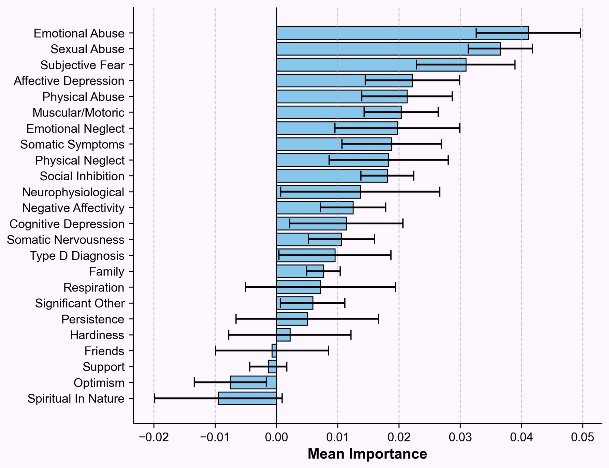 | [P8] Sung Hoon Yoon, Dawoon Jung, Dae-Jin Kim, Chan-Mo Yang, Young Hyeon Ahn, June-Woo Kim, Yong-Sung Kim, Suck-Chei Choi, Sang-Yeol Lee†. Psychological Predictors of Symptom Severity in Disorders of Gut?Brain Interaction: A Machine Learning Approach. Preprint. |
| 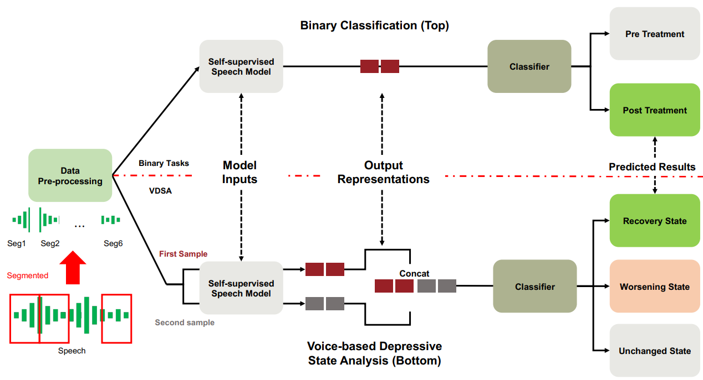 | [J9] June-Woo Kim*, Haram Yoon*, Bung-Nyun Kim, Sang-Yeol Lee, Dae-Jin Kim, Seong-Eun Moon, Yera Choi†, Chan-Mo Yang†. Deep Neural Network-Based Analysis of Voice Biomarkers for Monitoring Treatment Response in Adolescent Major Depressive Disorder. Communications Medicine, Accepted. |
| 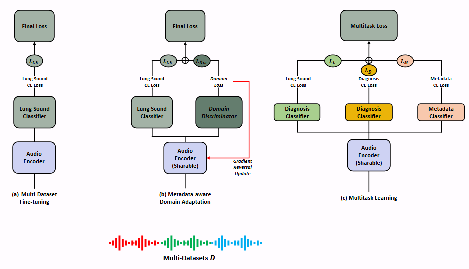 | [P7] June-Woo Kim, Miika Toikkanen, Heejoon Koo, Yoon Tae Kim, Won-Yang Cho, Hyesun Chang, Jaeyong Kim, Daehwan Hwang, Kyunghoon Kim†. Evaluating Generalization Strategies for Respiratory Sound Classification Across Heterogeneous Clinical Datasets: Algorithm Development and Multi-Cohort Validation. Preprint. |
| 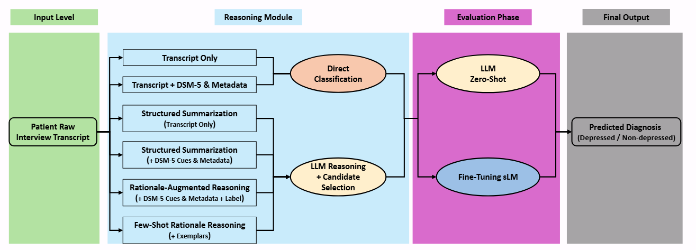 | [P6] June-Woo Kim, Haram Yoon, Dawoon Jung, Wonkyo Oh, Miika Toikkanen, Dahyeon Choi, Sung-Hoon Yoon, Dae-Jin Kim, Sang-Yeol Lee, Bung-Nyun Kim, Hyunju Lee, Chan-Mo Yang†. DSM-Guided Reasoning with Large Language Models: Improving Clinical Reliability in Mental Health Assessment. Preprint. |
| 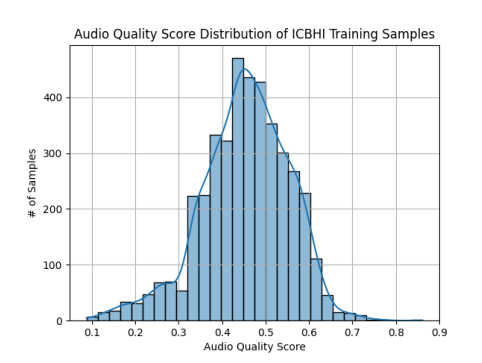 | [P5] Yoon Tae Kim, Heejoon Koo, Miika Toikkanen, Soo Yong Kim, June-Woo Kim†. ArcLung: Quality-Aware Margin Regularization for Respiratory Sound Classification. Preprint. |
| 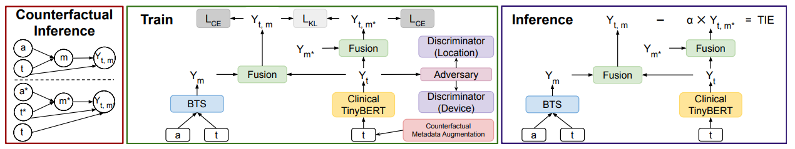 | [P4] Heejoon Koo, Miika Toikkanen, Yoon Tae Kim, Soo Yong Kim, June-Woo Kim†. Empowering Multimodal Respiratory Sound Classification with Counterfactual Adversarial Debiasing for Out-of-Distribution Robustness. Preprint. |
| 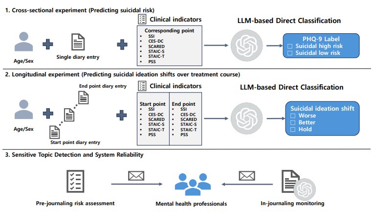 | [P3] June-Woo Kim, Haram Yoon, Wonkyo Oh, Dawoon Jung, Miika Toikkanen, Yeongdae Jo, Su-Woo Lee, Chan-Kyu Jeong, Sung-Hoon Yoon, Dae-Jin Kim, Su-in Jung, Dong-Ho Lee, Sang-Yeol Lee, Bung-Nyun Kim, Haanju Yoo, Young-Ho Kim, Chan-Mo Yang†. Detecting Suicidal Risk Using Large Language Models in Adolescents: Integrating Patient Journaling and Psychiatric Clinical Indicators. Preprint. |
| [P2] June-Woo Kim, Miika Toikkanen, Kyunghoon Kim†. Improving Respiratory Sound Classification via Meta-Ensemble Learning with Diverse Data Split Strategy. Preprint. | |
| 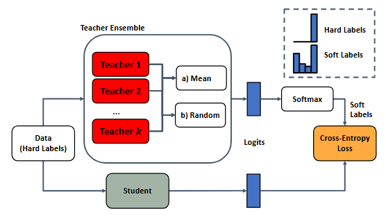 | [C11] Miika Toikkanen, June-Woo Kim†. Improving Respiratory Sound Classification with Architecture-Agnostic Knowledge Distillation from Ensembles. Conference of the International Speech Communication Association (INTERSPEECH) 2025. [webpage] |
| 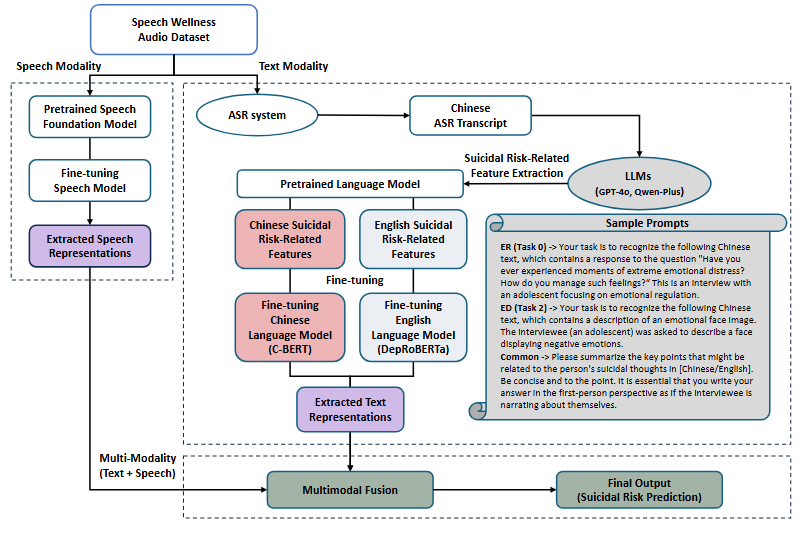 | [C10] June-Woo Kim, Wonkyo Oh, Haram Yoon, Sung-Hoon Yoon, Dae-Jin Kim, Dong-Ho Lee, Sang-Yeol Lee, Chan-Mo Yang†. Language-Agnostic Suicidal Risk Detection Using Large Language Models. Conference of the International Speech Communication Association (INTERSPEECH) 2025. [webpage] |
| 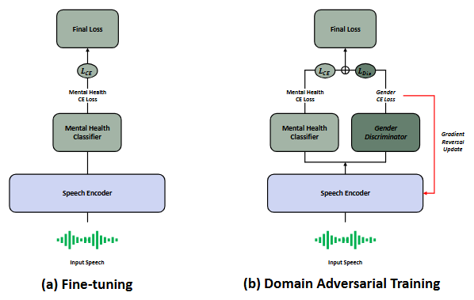 | [C9] June-Woo Kim, Haram Yoon, Wonkyo Oh, Dawoon Jung, Sung-Hoon Yoon, Dae-Jin Kim, Dong-Ho Lee, Sang-Yeol Lee, Chan-Mo Yang†. Domain Adversarial Training for Mitigating Gender Bias in Speech-based Mental Health Detection. International Conference of the IEEE Engineering in Medicine and Biology Society (EMBC) 2025. [webpage] |
| 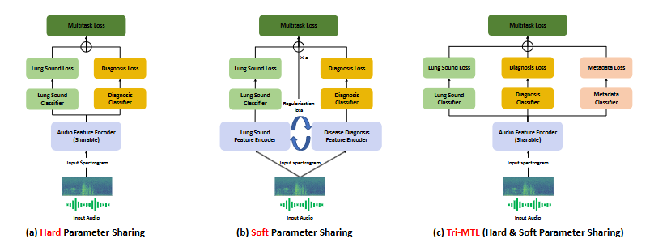 | [C8] June-Woo Kim, Sanghoon Lee, Miika Toikkanen, Daehwan Hwang, Kyunghoon Kim†. Tri-MTL: A Triple Multitask Learning Approach for Respiratory Disease Diagnosis. International Conference of the IEEE Engineering in Medicine and Biology Society (EMBC) 2025. [webpage] |
| 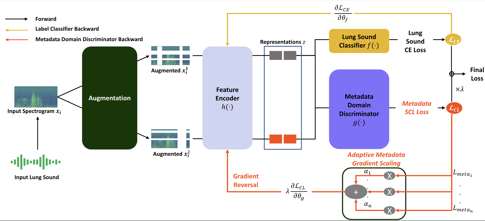 | [J8] June-Woo Kim, Miika Toikkanen, Amin Jalali, Minseok Kim, Hye-Ji Han, Hyunwoo Kim, Wonwoo Shin, Ho-Young Jung†, Kyunghoon Kim†. Adaptive Metadata-Guided Supervised Contrastive Learning for Domain Adaptation on Respiratory Sound Classification. IEEE Journal of Biomedical and Health Informatics (JBHI) 2025. [webpage] |
| 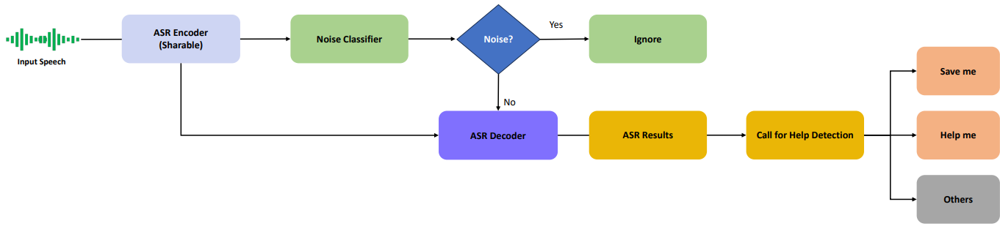 | [C7] Myeonghoon Ryu*†, June-Woo Kim*†, Minseok Oh, Suji Lee, Han Park. Noise-Agnostic Multitask Whisper Training for Reducing False Alarm Errors in Call-for-Help Detection. IEEE International Conference on Acoustics, Speech and Signal Processing (ICASSP) 2025. [webpage] |
| 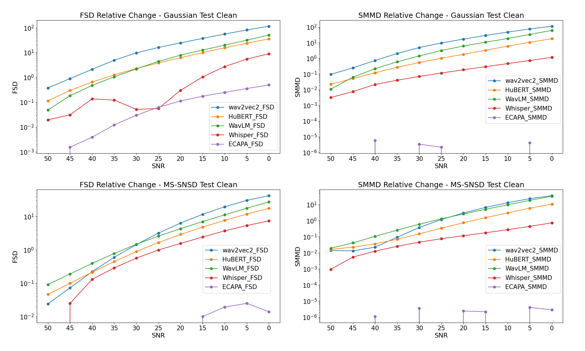 | [P1] June-Woo Kim, Dhruv Agarwal†, Federica Cerina. Understanding Frechet Speech Distance for Synthetic Speech Quality Evaluation. Preprint |
| 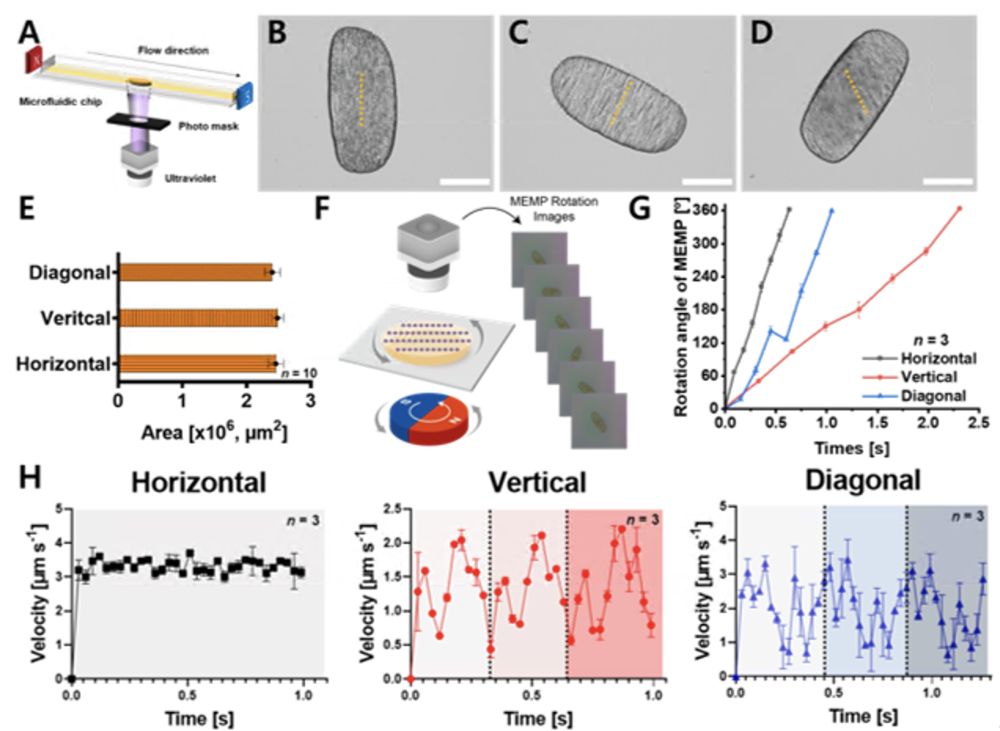 | [J7] Dong-Uk Han, Subin Park, June-Woo Kim, Chan-Hyeong Lee, Ju-Hyun Bae, Ho-Young Jung, Moon-Chang Baek†, Young Ki Han†. Multiplexed Detection Platform Implemented with Magnetic Encoding and Deep Learning-based Decoding for Quantitative Analysis of Exosomes from Cancers. Sensors and Actuators B: Chemical 2024. [webpage] |
| 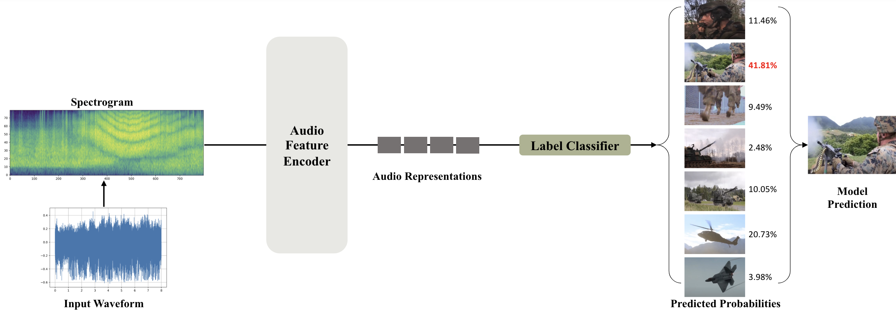 | [J6] June-Woo Kim, Chihyeon Yoon, Ho-Young Jung†. A Military Audio Dataset for Situational Awareness and Surveillance. Scientific Data 2024. [code] [webpage] |
| 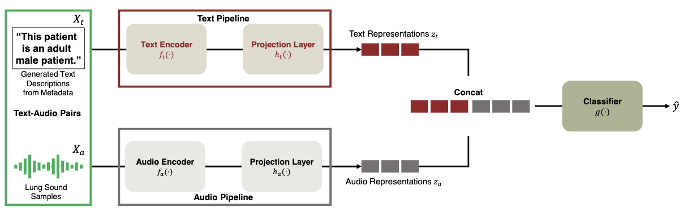 | [C6] June-Woo Kim, Miika Toikkanen, Yera Choi, Seong-Eun Moon†, Ho-Young Jung†. BTS: Bridging Text and Sound Modalities for Metadata-Aided Respiratory Sound Classification. Conference of the International Speech Communication Association (INTERSPEECH) 2024. [webpage] [code] |
| 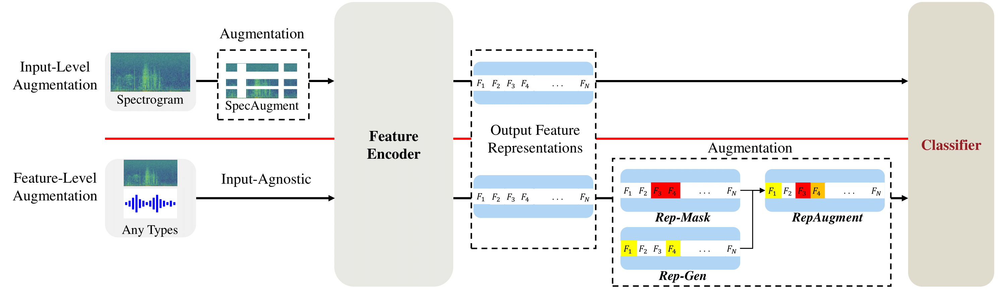 | [C5] June-Woo Kim, Miika Toikkanen, Sangmin Bae, Minseok Kim†, Ho-Young Jung†. RepAugment: Input-Agnostic Representation-Level Augmentation for Respiratory Sound Classification. International Conference of the IEEE Engineering in Medicine and Biology Society (EMBC) 2024. [webpage] |
| 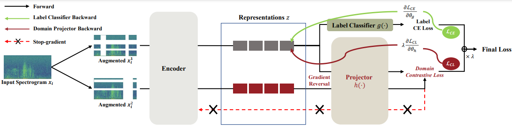 | [C4] June-Woo Kim, Sangmin Bae, Won-Yang Cho, Byungjo Lee, Ho-Young Jung†. Stethoscope-guided Supervised Contrastive Learning for Cross-domain Adaptation on Respiratory Sound Classification. IEEE International Conference on Acoustics, Speech and Signal Processing (ICASSP) 2024. [pdf] [code] |
| 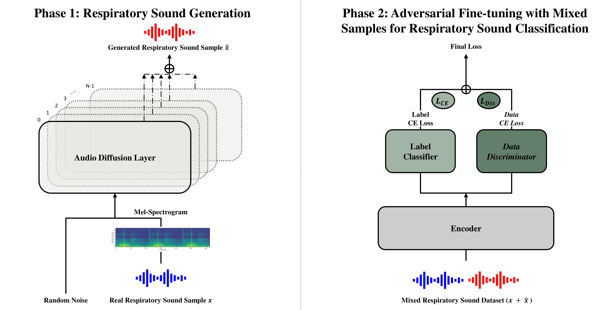 | [W1] June-Woo Kim, C. Yoon, M. Toikkanen, S. Bae, Ho-Young Jung†. Adversarial Fine-tuning using Generated Respiratory Sound to Address Class Imbalance. Neural Information Processing Systems Workshop on Deep Generative Models for Health (NeurIPSW) 2023. [webpage] [demo] |
| 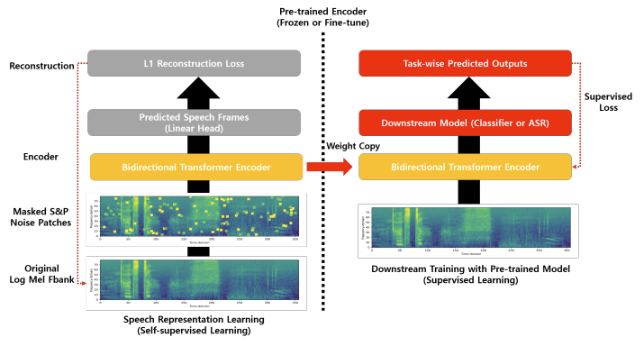 | [J6] June-Woo Kim, Hoon Chung, Ho-Young Jung†. Spectral Salt-and-Pepper Patch Masking for Self-Supervised Speech Representation Learning. Mathematics 2023. [webpage] |
| 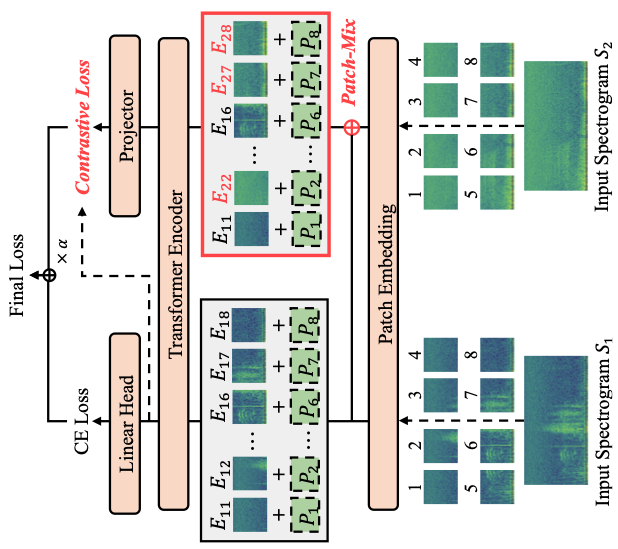 | [C3] Sangmin Bae*, June-Woo Kim*, Won-Yang Cho, Hyerim Baek, Soyoun Son, Byungjo Lee, Changwan Ha, Kyongpil Tae, Sungnyun Kim†, Se-Young Yun†. Patch-Mix Contrastive Learning with Audio Spectrogram Transformer on Respiratory Sound Classification. Conference of the International Speech Communication Association (INTERSPEECH) 2023. [pdf] [code] |
| 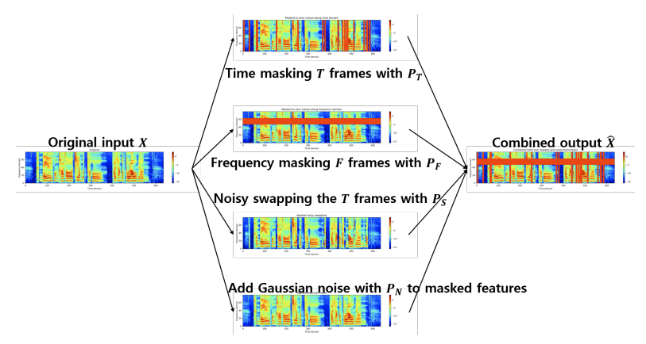 | [J5] June-Woo Kim, Hoon Chung, Ho-Young Jung†. Unsupervised Representation Learning with Task-Agnostic Feature Masking for Robust End-to-End Speech Recognition . Mathematics 2023. [webpage] |
| 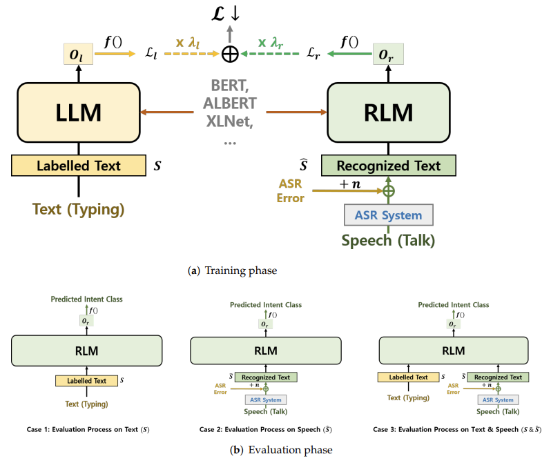 | [J4] June-Woo Kim, Hyekyung Yoon, Ho-Young Jung†. Improved Spoken Language Representation for Intent Understanding in a Task-Oriented Dialogue System. Sensors 2022. [webpage] |
| 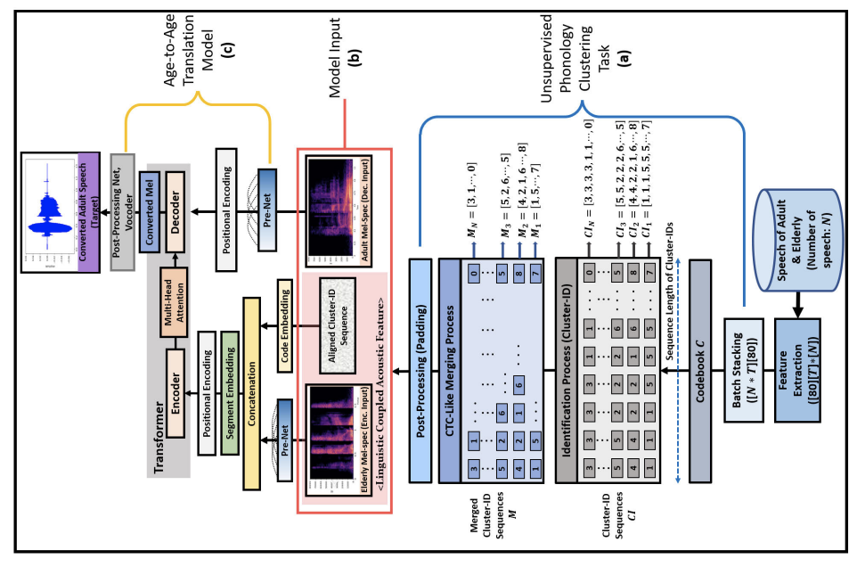 | [J3] June-Woo Kim, Hyekyung Yoon, Ho-Young Jung†. Linguistic-Coupled Age-to-Age Voice Translation to Improve Speech Recognition Performance in Real Environments. IEEE ACCESS 2021. [webpage] |
| 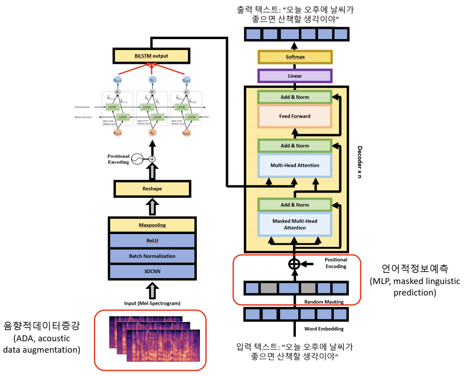 | [J2] June-Woo Kim, Ho-Young Jung†. End-to-End Speech Recognition Models using Limited Training Data. Phonetics and Speech Sciences 2020. [webpage] |
| 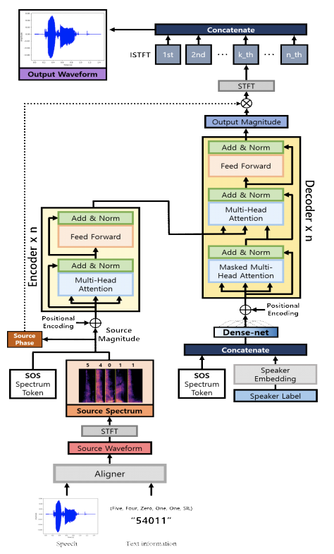 | [J1] June-Woo Kim, Ho-Young Jung†. Voice-to-voice Conversion using Transformer Network. Phonetics and Speech Sciences 2020. [webpage] |
| 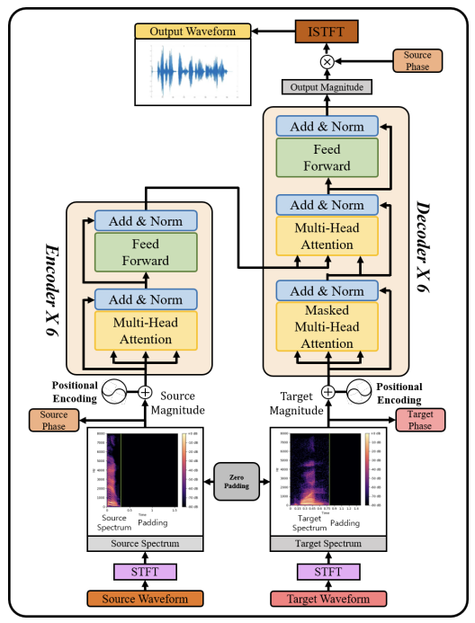 | [C2] June-Woo Kim, Ho-Young Jung, Minho Lee†. Vocoder-free End-to-End Voice Conversion with Transformer Network. International Joint Conference on Neural Networks (IJCNN) 2020. [pdf] [webpage] [demo] |
| 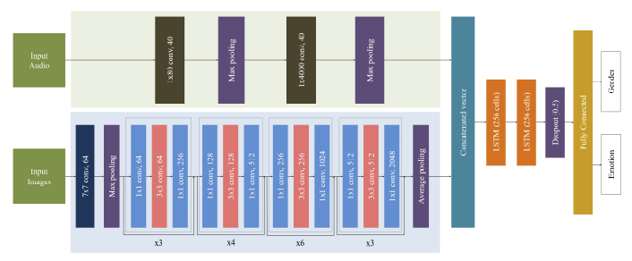 | [C1] Myungsu Chae, Tae-Ho Kim, Younghoon Shin, June-Woo Kim, Soo-Young Lee†. End-to-End Multimodal Emotion and Gender Recognition with Dynamic Weights of Joint Loss. International Conference on Intelligent Robots and Systmes Workshop (IROSW) 2018. [pdf] [code] |
Projects
Services
Awards and Honors
© 2023 June-Woo Kim Thanks Sangmin Bae for the template.